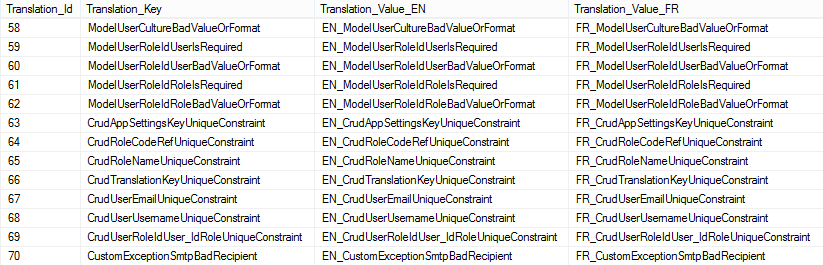
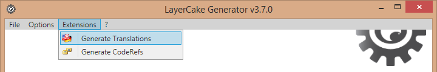

Duration: ~5mins
LayerCake populates theTranslation table.
This table contains entity validation errors and custom translations.
Custom records should be prefixed with the Custom string (but it is not necessary).
INSERT INTO [Labs]..[Translation] ([Translation_Key], [Translation_EN], [Translation_FR]) VALUES ( 'CustomValueMustBeGreaterThanZero', 'The ''value'' parameter must be greater than 0', 'Le paramètre ''value'' doit être supérieur à 0' )
To update the code (Core\Translations\{TranslationEnum.generated.cs, TranslationHelper.generated.cs}) use the Extensions > Generate Translations option in LayerCake Generator.
Use the OperationException class with TranslationEnum enumerations to pass messages from the server (business layer for example) to the client.
// Business | AppBusiness\MyClassBusiness.cs namespace Com.Example.Labs.Business { using System; using Com.Example.Labs.Core; [BusinessClass] public class MyClassBusiness : BusinessBase { [BusinessMethod] public void MyMethod(IUserContext userContext, int value) { if (value <= 0) { throw new OperationException(TranslationEnum.ValueMustBeGreaterThanZero); } // ... } } }
To get the translation message on client-side.
// Client-side try { using (var service = new ServiceProxy<IMyClassService>()) { service.Proxy.MyMethod(ClientContext.Anonymous, -1 /* bad value... */); } } catch (OperationException x) { foreach (var translation in x.Translations) { // Try to get the user's culture from: // 1. the HttpContext.Current.Session["UserContext"] if existing (Web context) // 2. the first culture defined by the browser (Web context) // 2. the system culture // 4. the default culture (Cultures.Default) MessageBox.Show( TranslationResolver.Current.GetMessage(translation)); // or... MessageBox.Show( TranslationResolver.Current.GetMessage(translation, CurrentUser.Culture)); // ... where CurrentUser is User instance // or... // Get the FR string MessageBox.Show( TranslationResolver.Current.GetMessage(translation, Cultures.FR)); } }